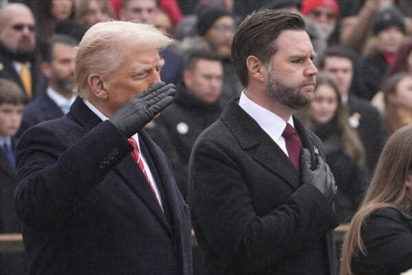

世界苦茶04月08日新闻 | 37条 | 特朗普威胁对中国再加50%关税

特朗普威胁对中国再加50%关税 | 社科院一中心因为反关税言论撤销 | 欧盟等国提供零关税方案与美国谈判 | 加密货币暴跌 | 美最高院批准以敌人法驱逐移民
三个水枪手
苦茶数据
美元兑人民币：7.34（昨日7.31，前日7.29）
美元兑日元：147.51（昨日145.29，前日145.53）
上证指数：3113（昨日3108，前日3342）
标普500指数：5062（昨日5074，前日5396）
比特币：80566（昨日74933，前日83429）
布伦特原油：64.74（昨日63.27，前日65.58）
中国新闻
• 中国社会科学院公共政策研究中心被撤销： 中国社会科学院官网发布关于撤销中国社会科学院公共政策研究中心的声明，根据《中国社会科学院非实体研究中心管理办法》规定，经研究决定，自4月2日起，正式撤销中国社会科学院公共政策研究中心。原“中国社会科学院公共政策研究中心”为无独立法人资格的非实体研究中心，不涉及实体资产。撤销后，原中心负责的科研项目移交至中国社会科学院经济研究所统筹处理。中心官网、平台于4月6日关闭，微信公众号“中国社会科学院公共政策研究中心”同步注销。所内兼职研究人员回归原部门，外聘人员依法解除聘用关系，外聘专家合作关系自动终止。 （翻评：这算是内部智库被撤销，是因为昨天涉及关税的一个朋友圈截图，这个惩罚也太可怕了吧，因为一个人员的一个朋友圈，整个中心被撤销。）
• 港官称国安教育常态化 ：中国第十个全民国家安全教育日即将来临，香港律政司长林定国接受港媒专访时说，国安教育应该持续每天都要做，美国制裁不会影响他的工作决心和生活。今年是中国国家安全法颁布施行十周年，4月15日是第十个全民国家安全教育日，香港将陆续有不同的活动推广国家安全。林定国在港媒《星岛日报》星期一刊出的专访中说，国家安全教育不应集中在某些特别日子。他以2月14日情人节为例称：“难道那天你才对老婆好？不会的，也不应该，应该持续每天都要做。”
• 网信办整治娱乐乱象 ：中国国家互联网信息办公室星期一通报，网信部门查处一批低俗炒作娱乐明星信息账号。国家网信办在官网公布，网信部门持续打击文娱领域饭圈乱象，督促网站平台依法依约关闭和长期禁言处置一批低俗炒作绯闻丑闻八卦的违法违规账号。国家网信办称，一段时间以来相关账号通过偷拍、跟拍明星非公开行程，发布未经核实的“爆料”信息；或以“知情人”名义编造、转发不实信息，或借标题党和虚假预告等形式，制造噱头，恶意博取流量；或使用暗语、隐喻等手段，无底线炒作明星八卦信息。
• 中方驳斥G7涉台言论 ：针对七国集团指中国大陆在台海周边军演破坏稳定，中国驻加拿大使馆驳斥称，台湾问题纯属内政，不容外来干涉。路透社报道，加拿大、法国、德国、意大利、日本、英国和美国外交部长以及欧盟高级代表，星期天发表联合声明说，中国大陆近日在台湾周边的军事演习具有挑衅性和破坏性，呼吁通过对话“和平解决问题”。中国驻加拿大使馆微信公众号星期一通过答记者问回应称：“少数国家和组织罔顾事实，颠倒黑白，公然干涉中国内政，中方对此强烈不满，坚决反对。”
• 中方通报福岛核电站附近海水等检测结果未见异常： 4月7日，国家原子能机构就中方对日本福岛核污染水排海独立取样检测答记者问。答：在国际原子能机构框架下，中国国家原子能机构组织国内有关专业实验室于 2月下旬赴日本福岛第一核电站，参加福岛核污染水排海国际监测现场取样任务。期间，中方专家与其他有关国家实验室专家一道，独立采集了福岛核电站附近海域海水和海洋生物等样本。目前，国内实验室已完成海水和海洋生物样本分析检测，样本中氚、铯-134、铯 -137、锶-90等放射性核素活度浓度未见异常。
亚太印太新闻
• 赖清德称台美共享繁荣 ：台湾总统赖清德星期一在社交平台X发文称，台湾与美国将迎来共享繁荣的黄金时代。赖清德在贴文中重申，台湾将不寻求对美国采取反制关税措施。他说：“与其这么做，我们将与美国商讨两地零关税。为确保台湾的竞争力，我们将提升对美国商品的采购，并采取其他措施。台湾与美国将携手迎来共享繁荣的黄金时代。”
• 韩国瑜拒参加国是会议 ：台湾媒体报道，台湾立法院长韩国瑜将不会参加针对美国关税措施举行的共商国是会议。台湾《联合报》报道，行政院长卓荣泰邀请韩国瑜、蓝绿白三党团干部星期一下午2时共商国是，但韩办人士称，韩国瑜时间无法配合，下午不参加，但韩国瑜发出隔天下午2时30分朝野协商通知，将于星期二研商卓荣泰对美国关税政策进行专案报告等事宜。美国总统特朗普上星期三宣布对全球征收对等关税，对台湾加征的税率为32%。台湾总统赖清德星期天发布约八分钟的影片表明，没有采取关税报复的计划，而是要与美国就“零关税”进行谈判。
• 菲律宾副总统回国 ：菲律宾副总统莎拉为了父亲、菲前总统杜特尔特，在荷兰海牙待了近一个月后，已经回国。法新社报道，莎拉的幕僚星期一说，莎拉于星期天晚上飞抵马尼拉国际机场。莎拉在离开海牙前向记者说，她已完成组建父亲的律师团队，并向国际刑事法院提交所需的“最后一份文件”。她将返回菲律宾。
• 民进党建议蔡英文领谈 ：台湾执政的民进党立委建议，由前总统蔡英文率领谈判小组赴美磋商关税问题。美国总统特朗普上周宣布对全球贸易伙伴加征对等关税，对台湾加征32%关税。台湾总统赖清德星期天在争取改善对等关税策略方面提出五点作法，包括由行政院副院长郑丽君领军谈判小组，赴美磋商关税问题。据中时新闻网报道，民进党立委何欣纯和陈素月星期一在立法院召开的记者会上指出，谈判小组赴美之行事关重大，建议赖清德要有重量级人马领军谈判小组。她们想到的第一人选是前总统蔡英文。
• 韩国定6月3日总统选举 ：韩国政府相关人士星期一接受韩联社电话采访时透露，政府初步决定6月3日为总统选举日。报道引述相关人士说，韩国政府将在星期二举行的定期国务会议提交相关议案，并最终确定和公布总统选举日期。韩国宪法法院4日裁定罢免总统尹锡悦。根据韩国《宪法》规定，总统被罢免后必须在60天内举行总统选举。
• 印尼或改组内阁 ：印度尼西亚2025年第一季的经济增长预计低于预期，有消息指总统普拉博沃考虑在未来几个月改组内阁，不仅是因为一些内阁成员表现不佳，也因为来自执政联盟的压力。三名印尼高级政府官员向《海峡时报》透露，普拉博沃的核心圈子向他建议，把内阁中没有表现的部长剔除，以加快履行他的竞选承诺。未获授权接受媒体采访的三名政府官员说，经济事务统筹部长艾尔朗加是可能被免职的内阁成员之一。
科技新闻
• 特朗普谈TikTok交易 ：美国总统特朗普说，若不是因为他上周宣布对中国多征收34%的关税，中国早已同意字节跳动公司出售TikTok美国业务的交易。法新社报道，特朗普星期天在空军一号上对记者说：“有人向我报告，TikTok的协议已接近达成，还没有达成，但非常接近达成，中国因为关税问题突然改变主意。”特朗普说：“如果我稍微降低一点关税，他们会在15分钟内批准这笔交易，这显示关税的强大作用。”
财经新闻
• 苹果三天五架货机从印度和中国飞往美国： 印度一名高级官员证实，在三月份的最后一周，苹果公司在仅仅三天内紧急安排了五架满载iPhone及其他产品的货机从印度和中国飞往美国。此次紧急运输的目的是为了规避美国唐纳德·特朗普政府自4月5日起生效的新10%对等关税。消息人士称，尽管面临关税问题，苹果公司目前并无计划在印度或其他市场提高零售价格。为了减轻关税带来的影响，苹果迅速将位于印度和中国的制造中心的库存转移到美国，尽管这一时期通常是运输淡季。印度和中国以及其他关键地点的工厂一直在向美国运输产品，以应对更高的关税。苹果在美国的仓库已储备数月货物。 （翻评：对印度的三星和苹果生产商是重大的利好。）
• 越南的关税提议遭特朗普顾问拒绝——“不是谈判”： 越南提出的降低贸易壁垒以推迟实施美国总统唐纳德·特朗普的“互惠”关税的提议遭到白宫顾问的拒绝。据政府消息称，越南副总理裴青山周日会见了美国驻越南大使马克·E·纳珀，并重申越南愿意将美国产品的进口关税税率降至零，以期推迟新关税的实施。然而，美国高级贸易顾问彼得·纳瓦罗当天晚些时候否认了这种可能性，他告诉福克斯新闻：“这不是谈判，这是基于贸易逆差的国家紧急状态，贸易逆差因欺骗而失控。” （翻评：纳瓦罗现在是关税的绝对鹰派，如果纳瓦罗真的可以主导一切，逼迫其他国家停止中国转口贸易，取消所有非关税壁垒，可能会有很大的影响。我认为起码可以对方降低关税，你同等降低关税来进行缓和。）
• 欧盟向特朗普提出对所有工业品实行“零关税”对等协议： 欧盟委员会主席乌尔苏拉·冯德莱恩表示，作为贸易谈判的一部分，欧盟委员会已向美国提出了取消所有工业品关税的协议，并强调如果谈判失败，她打算对特朗普的政策进行报复。冯德莱恩周一下午表示，“我们随时准备与美国进行谈判。事实上，我们已经对工业品实施了零关税，就像我们与许多其他贸易伙伴成功实施的那样。”但目前没有提供进一步的细节。冯德莱恩补充说：“我们希望通过谈判解决问题”，但警告称，她的政府将在“必要时”使用“一切可用手段”进行反击，包括 2023 年推出但从未启动过的反胁迫手段。
• 特朗普坚持关税政策 ：美国总统特朗普说，尽管许多贸易伙伴急于避免关税，他不会暂停“对等关税”政策，但他同时暗示愿意进行谈判。彭博社报道，特朗普星期一在白宫与以色列总理内坦亚胡会面时对媒体说，关税对他的经济议程“非常重要”，他眼下没有暂停关税政策的考虑。但他也说：“可以与每个国家达成公平和良好交易”，称“可以有永久性关税，也可以进行谈判，因为除了关税之外，我们还需要其他东西”。
• 美国威胁对中国加征50%关税 ：美国总统特朗普说，若中国不取消对美商品的34%关税反制措施，美国将于4月9日起对中国商品额外加征50%关税。白宫随后表示，自4月9日起，美国对中国加征的关税总税率将达到104%。路透社报道，特朗普星期一在社交媒体Truth Social发文称：“如果中国不在星期二之前撤回其在长期贸易侵害之外再加征的34%关税，美国将从4月9日起对中国商品额外加征50%的关税。”他补充说：“此外，所有有关中方请求与我们会谈的对话将被终止！与此同时，美国将立即启动与其他提出会谈请求的国家的谈判。”
• 白宫否认暂停关税 ：美国股市主要股指星期一在震荡交易中再次下跌，此前白宫官员否认美国消费者新闻与商业频道的报道，称不知道美国总统特朗普考虑对除中国以外的所有国家暂停90天的关税。纽约股市星期一开盘后进一步暴跌，道琼斯指数跌幅一度超过1200点或超过3％，标普500指数和纳斯达克指数跌幅分别一度达3.5％和约4％。在CNBC关于特朗普考虑暂停关税的报道出街后，三大股指急速收复失地，并且转为上涨。截至新加坡时间晚上10时15分，纳斯达克指数上涨3.48%，标普500指数上涨2.38%，道琼斯指数上涨1.10%。随着白宫否认这一说法之后，美国股市三大股指已重新下跌。道琼斯指数在新加坡时间11时18分左右跌幅达2.24％，标普500指数跌1.68％，纳斯达克指数跌1.40％。
• 加拿大申诉美加税 ：世界贸易组织指出，加拿大已就美国总统特朗普对汽车进口加征高额关税一事，向世贸组织正式提出申诉。法新社报道，世贸组织星期一在声明中说：“加拿大已就美国对来自加拿大的汽车及汽车零部件加征25%关税的措施，要求与美方进行争端磋商。”加拿大于4月3日提交这一申述，并于星期一向世贸组织成员国通报。
• 日美同意继续磋商 ：日本首相石破茂指出，他已与美国总统特朗普通话，双方就美国实施的关税课题达成一致，决定继续展开磋商。综合路透社和法新社报道，石破茂星期一在记者会上说：“特朗普总统坦率地表达了他对当前美国在国际经济形势中处境的理解。在今日的交流基础上，双方同意指定内阁成员负责相关事务，并继续进行讨论。”石破茂还说：“我告诉特朗普总统，日本已连续五年成为美国最大的投资国，而当前的关税政策可能削弱日本企业的投资能力。”
• 加密货币暴跌 ：加密货币在亚洲市场被大幅抛售，凸显市场明显的避险情绪。比特币在新加坡时间星期一一度跌至低于7万5000美元的低点，跌幅超过5％。这是去年11月7日以来比特币第一次低于这个水平。排名第二的代币以太币则一度跌至1500美元左右，创下2023年10月以来的盘中最低水平。
• 摩根大通警告衰退 ：摩根大通首席执行长戴蒙警告，特朗普总统的关税政策可能导致物价上涨，将全球经济推向衰退，并削弱美国在全球的地位。美国有线电视新闻网报道，戴蒙在年度致股东的信中说：“近期的关税可能会增加通胀，并使许多人认为经济衰退的可能性更高……虽然这些关税是否会导致经济衰退尚存疑问，但它们将减缓经济增长。”戴蒙指出，美国在全球的“非凡地位”是建立在经济实力、军事力量，以及道德基础之上。但征税措施及特朗普的“美国优先”外交政策或将削弱美国在世界的特殊地位。
• 泰国禁卖空救市 ：美国大规模加征关税引发全球金融市场剧烈震荡之际，泰国宣布采取临时干预措施，禁止大多数证券卖空交易，并同步收紧多项交易机制，以遏制市场进一步下跌、稳定投资者预期。彭博社报道，泰国证券交易所董事会星期一召开特别会议，决定自星期二起，对除了专门负责为市场提供流动性的“做市商”外，其他市场参与者都暂时禁止进行卖空交易；同时，泰国证券交易所将降低股票和衍生品价格的日内涨跌幅限制，限制价格的剧烈波动。这项措施将持续至4月11日。当天适逢泰国公共假日，金融市场休市。
• 菲律宾考虑降美关税 ：菲律宾贸易部长罗克说，菲律宾正考虑在美国总统特朗普实施大规模关税后，下调部分对美商品的进口关税。彭博社报道，罗克星期一在记者会上说：“我们确实计划这样做。”不过，她也提到，目前尚未决定具体涉及哪些商品。她还说，作为亚细安的成员国，菲律宾正评估是否加入该组织可能采取的集体应对措施，以应对美国的关税政策。
• 日本拟提一揽子方案 ：特朗普政府宣布实施高额关税后，日本首相石破茂表示，日本计划向特朗普总统提出一套“一揽子”解决方案，以争取减免关税。日本官员透露，石破茂将于星期一当地时间晚上9时与特朗普进行通话。综合路透社和法新社报道，石破茂星期一在议会中强调：“我们必须提出整体性的方案，而不能分散地逐一解决问题。”他补充说，这可能包括日本参与阿拉斯加天然气管道项目的提议。特朗普曾在2月于白宫与石破茂会晤时提到，日本将成为这一“巨型”能源项目的合作伙伴。
• 韩国经济下行压力增大 ：韩国开发研究院研判韩国经济下行风险持续扩大。韩联社报道，韩国开发研究院星期一发布《4月经济动向》报告称，近期韩国经济的外部环境急剧恶化，经济下行压力增大。美国经贸政策变化导致经济外部条件恶化，以出口企业为主的企业信心也萎缩。若美国加征关税政策落地，企业信心恐将进一步恶化。这是韩国开发研究院连续四个月提及经济下行的可能性。
• 欧盟拟设防务基金 ：欧盟财政部长本周将讨论设立一个联合政府间的防务基金，用来采购欧盟共同拥有的防务装备，并向成员国收取使用费。路透社报道，欧盟主席国波兰委托布鲁塞尔智库布鲁盖尔起草的报告显示，这可在不增加国家公共债务水平的情况下，筹集大量防务资金，而这正是许多高债务国家关注的重点。这个名为“欧洲防务机制”的基金将根据一项政府间条约成立，并拥有可观的已缴和可调动资金，允许基金在市场上贷款。这个机制也允许英国、乌克兰或挪威等欧盟以外的成员加入。
• 美民众抗议关税政策 ：中国官媒在社交平台发文称，美国开展自救行动应对总统特朗普滥用关税措施。中国央视新闻旗下新媒体“玉渊谭天”星期一在官方微信公众号上发表文章，指美国民众除了加紧囤货外，还涌上街头，抗议特朗普的关税政策。一批科技和金融行业的知名人士也在组团前往特朗普的海湖庄园，希望和特朗普就他全面征收关税一事进行常识性讨论。文章提到，面对美国各阶层的呼声，特朗普回应说：“这是一场经济革命，我们一定会赢。尽管不容易还是要挺住，最终结果将会是历史性的。”
• 油价创近年新低 ：全球贸易战恐慌拖累国际油价星期一下跌超过3%，一度失守60美元大关，跌至2021年以来最低点。路透社报道，截至格林威治时间凌晨12时49分，美国西得克萨斯中间基原油下跌2.20美元或3.6%，每桶报59.79美元。布伦特原油期货则下跌2.28美元至每桶63.30美元，跌幅达3.5%。以盘中低点计算，这两个基准都创下了自2021年4月以来的最低水平。过去一周，布伦特油价下跌10.9%，原油价下挫10.6%；上个星期五中国宣布对美国商品加征34%关税后，油价更是直接暴跌7%。
• 中国外储连16月超3.2万亿 ：中国外汇储备规模连续16个月维持在3.2万亿美元以上。中国国家外汇管理局星期一在官方微信公众号发布的统计数据显示，截至2025年3月末，中国外汇储备规模为32407亿美元，较2月末上升134亿美元，升幅为0.42%。中国国家外汇局称，今年3月，受主要经济体宏观经济数据、财政货币政策及预期等因素影响，美元指数下跌，全球金融资产价格总体下跌。汇率折算和资产价格变化等因素综合作用，当月外汇储备规模上升。
俄乌战争
• 泽连斯基抱怨美方不力 ：乌克兰总统泽连斯基再次抱怨美国没有施加足够压力迫使俄罗斯接受无条件停火。新华社报道，泽连斯基星期天在社交媒体发文说，乌克兰已经同意美方关于全面无条件停火的提议，但是俄方持拒绝态度。“我们在等美方的回应，但是美方至今都没有回应。”他还称，俄军当天从黑海海域发射导弹袭击乌克兰，而乌克兰的“伙伴”了解哪些俄罗斯舰船参与袭击以及导弹发射的具体位置等确切信息。俄军想要保留海上打击能力，这是俄方拒绝无条件停火的原因之一。
其他新闻
• 美军空袭也门致死伤 ：也门胡塞武装指美军星期天晚上对也门首都萨那一处目标实施空袭，造成至少四人死亡、23人受伤。胡塞武装卫生部门发布消息说，美军星期天晚上空袭萨那东部区域，造成多处住房受损。救援人员仍在现场实施救援。当地居民告诉新华社，星期天傍晚，美国战机在萨那上空密集飞过，之后传来剧烈爆炸声，爆炸现场火光冲天、浓烟滚滚。
• 以色列控制加沙过半 ：以色列已重新控制加沙超过50%的领土。5名以色列士兵表示，以色列一直在拆毁位于加沙和以色列边境的房屋、农田等基础设施，使巴勒斯坦人无法居住。反对占领的退伍军人组织“打破沉默”4月7日表示，以色列军队将巴勒斯坦人从边境附近赶走，形成所谓缓冲区，并通过“广泛的蓄意破坏”，为以色列未来控制这些地区奠定了基础。以色列4月7日凌晨袭击加沙汗尤尼斯一家医院外的媒体帐篷，造成包括2人死亡、6人受伤。以色列声称其目标是一名冒充记者的哈马斯武装分子。美联社称，该男子偶尔以自由记者身份供图。加沙卫生部门4月7日表示，过去一天当地医院共接收57具遗体，另有137人受伤。
• 美最高法院准驱逐委移民 ：美国最高法院以5票赞成、4票反对的结果，推翻了哥伦比亚特区联邦地区法院法官博斯伯格的禁令，允许政府援引《外国敌人法》驱逐委内瑞拉移民。最高法院表示，官员必须向因《外国敌人法》被驱逐的移民提前发出通知，以便他们有“合理的时间”在“适当的地点”提出人身保护诉讼。但保守派多数认为，诉讼须在得克萨斯州而非哥伦比亚特区的法院进行。
• 特朗普呼吁美国人坚强 ：就在纽约股市开盘前，美国总统特朗普呼吁美国人“保持坚强、勇敢与耐心”。综合法新社和路透社报道，市场普遍预期当日将再度大幅下跌。特朗普星期一在谈及引发全球经济动荡的关税改革时说：“美国现在有机会做一件几十年前就该做的事。不要软弱！不要愚蠢！……要坚强、勇敢、耐心，最终我们将收获伟大！”白宫国家经济委员会主任哈塞特说，特朗普总统愿意倾听贸易伙伴提出的“优质协议”，以寻求对美国制造业和农民有利的合作。
• 英国拟推男性健康战略 ：研究数据显示，男性相较女性更容易过早死亡。专家指出，部分原因在于男性免疫系统较弱，无法有效抵御感染。此外，许多男性缺乏与医院、医生保持互动的基本能力，难以及时识别并应对潜在健康问题。为了应对这一情况，英格兰政府本月将展开一项男性健康战略的咨询，专家们认为相关举措已刻不容缓。英国广播公司报道，在英国，男性吸烟、饮酒、使用毒品的比例较高，同时高胆固醇和高血压等慢性病的发生率也较女性显著。这些因素导致男性的平均寿命比女性短四年，并且在75岁前因心脏病、肺癌、肝病或意外去世的风险比女性高出近60%。
• 纽约州拟校园禁手机 ：美国纽约州立法领导人近日达成共识，计划全面禁止公立学校学生在校园内使用智能手机，这些学校通常包括从幼儿园到高中的中小学。彭博社报道，纽约州众议院议长希斯提星期四在州议会大厦说，这项禁令将涵盖整个上课期间，从第一节课铃响直至放学结束。纽约州教师联合会主席皮尔森指出：“研究表明，全面禁止手机有助于提升学校安全性，并帮助学生集中精力、专注学习，取得更好的成长。” （翻评：支持未成年人禁智能手机，尤其禁社交网络媒体。不禁止直接废掉一代人。）